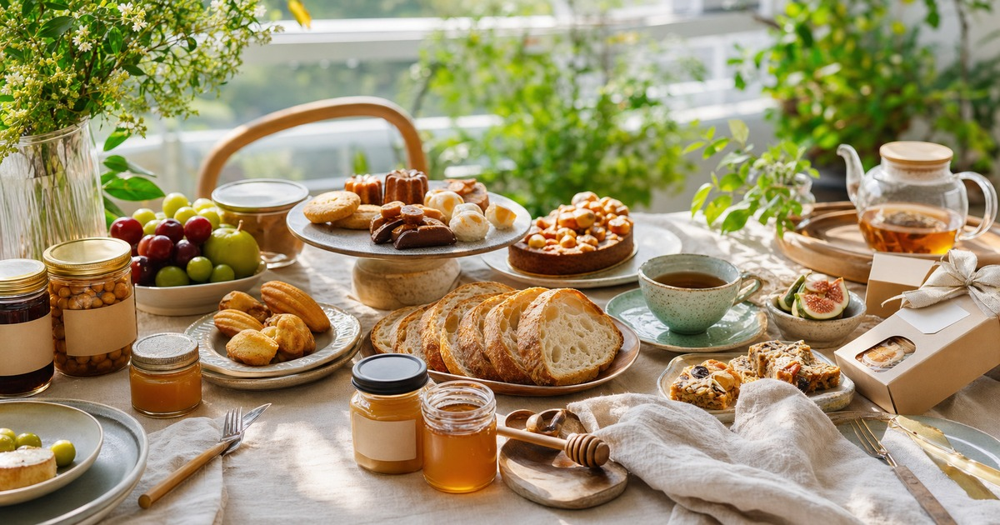

週末餐桌升級：異國食材、台灣小農、蜂蜜與甜點的待客清單
待客餐桌不必複雜，先用主食、風味小物、蜂蜜甜點和飲品建立好準備的上桌順序。

週末請朋友來家裡，不一定要做一桌複雜料理。讓餐桌變得有記憶點的，常常是一道穩定主食、一兩個風味小物、可以分享的甜點和不慌張的上桌順序。異國食材、台灣小農、蜂蜜和糕點都適合放進待客清單，但要先服務餐桌節奏，不是把所有東西堆上桌。
先決定這是一桌正餐、下午茶還是伴手禮
待客餐桌最先要決定形式。若是正餐，主食和熱菜要穩；若是下午茶，甜點、蜂蜜、茶飲和小點心要好分食；若是拜訪伴手禮，包裝、保存和對方飲食限制比華麗更重要。
形式一清楚，採買就不會失控。你不需要同時準備異國食材、小農禮盒、兩種蜂蜜、三盒甜點和一堆飲品；每一桌只需要一個主軸，再用兩三個小物補層次。
也請先問客人是否有過敏、素食、宗教飲食或孩子同行。這不是掃興，而是讓餐桌更從容。
若是第一次邀請不熟悉飲食習慣的朋友，菜色越應該保留彈性。把醬料、蜂蜜、堅果或辛香料分開上桌，讓客人自行添加，通常比一開始就把所有風味混在一起更體貼。
- 正餐：主食和熱菜先穩。
- 下午茶：甜點、蜂蜜與茶飲好分食。
- 伴手禮：包裝、保存與對方需求優先。
異國食材要有一個清楚用途
食材玩家可以從全球風味、異國食材和家庭料理升級方向參考。異國食材最怕買回家後不知道怎麼用，所以採買前要先想好它會出現在沙拉、麵包、主菜、醬料，還是餐後小點。
不要為了讓餐桌看起來豐富，就買很多平常不會料理的食材。週末待客最穩的方式，是用你熟悉的一道料理作底，再加入一個新的風味元素。
若食材需要冷藏、特殊烹調或保存期限較短，請先安排使用日期。即時販售資訊、保存條件與供應狀態都請回到商品頁確認。
對不常下廚的人來說，調味型食材比完整食材更容易成功。醬料、香料、抹醬或可直接搭配麵包與沙拉的品項，能讓週末餐桌多一點新鮮感，又不會把主人逼進不熟悉的料理難題。
Elite 嚴選
蜂蜜和小農選物適合做餐桌的風味轉場
河洛台灣精品館、三代養蜂場與 BBHONEY 可以放在台灣選物、蜂蜜和伴手禮脈絡裡比較。蜂蜜可以搭配麵包、優格、茶飲或甜點，但本文不寫任何健康、保健或療效宣稱。
蜂蜜採買應回到風味、保存、用途和包裝大小。若只是週末待客，小容量或易分享的包裝可能比大罐更適合；若是送禮，則要看保存方式和對方是否常用。
小農或地方選物的價值，不必用誇張詞彙包裝。清楚標示來源、風味、保存和食用方式，已經比空泛的高級感更有說服力。
- 蜂蜜只寫風味與搭配，不寫保健效果。
- 送禮先看保存與包裝。
- 餐桌搭配以小容量、多用途為主。
甜點要控制份量，也要控制收尾
Kris 克里酥和港記酥皇可以從甜點、糕點、伴手禮和辦公室分享脈絡參考。甜點適合讓餐桌有結尾，但不需要種類太多；兩種口味、一個共享盤，通常比拆滿整桌更好控制。
若有孩子、長輩或飲食限制者同行，請先看成分、過敏原、保存方式與食用建議。本文不把甜點寫成健康選擇，也不替任何飲食需求做個人化建議。
收尾也要想好：剩下的甜點要怎麼保存、是否方便讓客人帶走、餐具是否好清洗。真正好的待客餐桌，是客人離開後你不會被一堆殘局懲罰。
甜點上桌前也可以先切小份，讓每個人都能試一點，不必被完整份量綁住。這種安排對家庭聚會和辦公室分享都更友善，也能減少吃不完的浪費。
讓餐桌有層次，但不要讓主人太累
週末餐桌的核心不是表演，而是讓大家坐下來舒服地吃。可以用一個主食、一個新風味、一個蜂蜜或醬料、一份甜點和一壺飲品建立節奏；這樣既有變化，也不會讓準備過程太緊繃。
如果你不確定要從哪裡開始，先選一個你熟悉的基礎：麵包、沙拉、熱湯、茶或咖啡。再讓異國食材、小農選物或甜點成為點綴，而不是讓它們接管整桌。
商品成分、保存與即時販售資訊請以下單前商品頁公告為準；涉及過敏或特殊飲食，請依商品標示與個人狀況判斷。
同主題品牌參考
FAQ
週末待客一定要準備很多品項嗎？
不需要。建議先決定正餐、下午茶或伴手禮形式，再用一個主軸搭配兩三個小物，餐桌會更清楚，也比較不容易過度採買。
蜂蜜可以寫健康功效嗎？
本文不做健康、保健或療效宣稱。蜂蜜只以風味、搭配、保存與送禮情境討論，實際成分與標示請以商品頁為準。
甜點送禮要注意什麼？
請先看保存方式、成分、過敏原、包裝大小和對方飲食限制。若不確定，選擇易分享、易保存的品項通常較穩妥。
下一步建議
先決定正餐、下午茶或伴手禮形式，再依風味、保存與分享方式挑選食材與甜點。
重要警語
本文為一般餐桌與送禮情境參考，不構成營養、健康或個人化飲食建議；成分、過敏原、保存與即時販售資訊請以商品頁公告為準。
本文含品牌／商品導購連結；若你透過部分商品連結前往選購，Elite Fashion 可能取得合作收益。本文仍以編輯判斷與使用情境整理為主，價格、規格、活動與庫存請以商品頁公告為準。